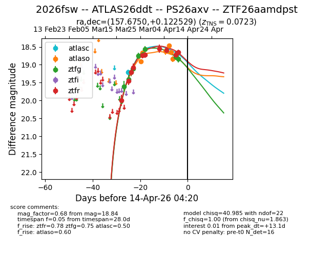
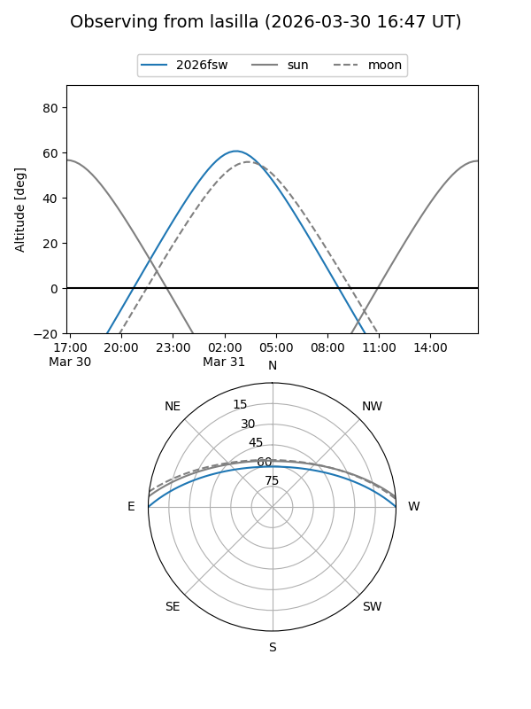
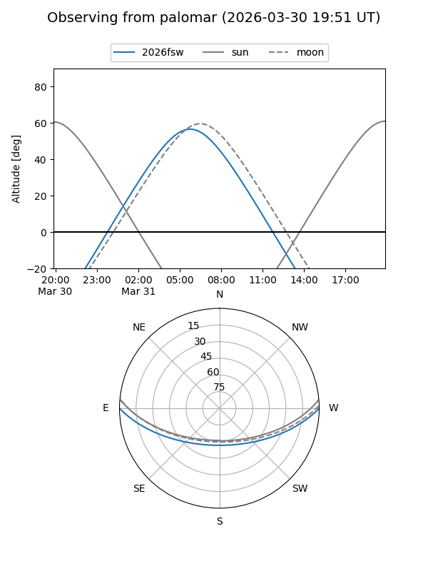
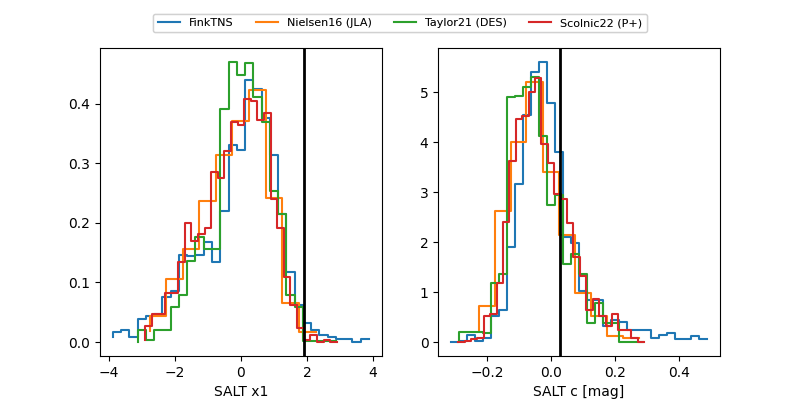

2026fsw
Target 2026fsw at 2026-04-14 04:28
Aliases and brokers:
FINK: link
Lasair: link
ALeRCE: link
TNS: link
YSE: link
alt names
ZTF26aamdpst (ztf,fink_ztf)
2026fsw (tns,yse)
ATLAS26ddt (atlas)
PS26axv (panstarrs)
Coordinates:
equatorial (ra, dec) = 157.6750,+0.12253
equatorial (HMS+DMS) = 10:30:42.01,+00:07:21.10
galactic (l, b) = (245.6919,+46.74924)
Flags:
confirmed ia
Photometry:
last atlasc=19.21, atlaso=18.84, ztfg=18.84, ztfr=18.66
1 atlasc, 6 atlaso, 9 ztfg, 10 ztfr detections
Lightcurve

Visibility


Additional plots
